경골 간부 골절의 치료 옵션
경골 간부 골절은 고에너지 손상으로 생기는 골절로, 대부분 계단이나 킥보드, 교통사고에서 발생합니다. 치료를 제대로 하지 않으면 부정유합(malunion)으로 정렬(alignment)이 변해 환자의 삶에 좋지 않은 영향을 줄 수 있습니다. 그래서 경골 간부 골절은 적절한 시기에 제대로 치료해야 합니다. 최근 진료한 7명의 환자를 사례별로 정리해 보겠습니다.
사례 1. 계단에서 다친 청소년 여자 환자
계단을 내려오다 몸의 무게가 정강뼈를 누르면서 골절이 생겨 내원했습니다. 경골뿐 아니라 비골 골절도 함께 있었습니다. 사진에서 왼쪽 정강뼈가 전위된 골절을 볼 수 있습니다.
성장이 거의 끝난 청소년이어서 골절 부위를 직접 건드리지 않고 치료할 수 있는 골수강 내 금속정을 사용했습니다. 수술 후 6주째 정렬이 회복된 것을 확인했고, 3개월째에는 골절선이 거의 보이지 않았습니다. 이런 환자에서 금속정은 좋은 선택지입니다.
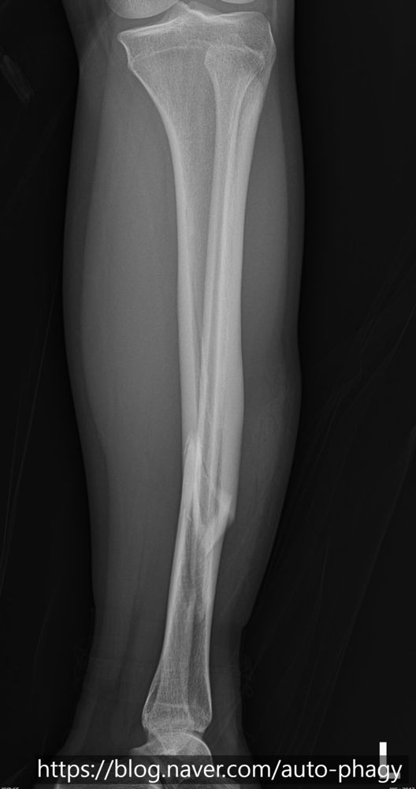
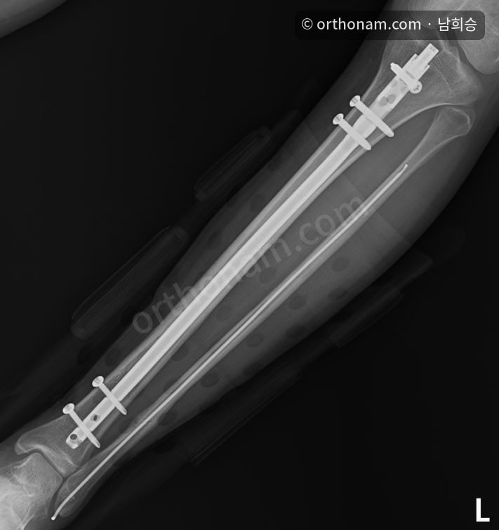
사례 2. 킥보드를 타다 넘어진 청소년 남자 환자
킥보드를 타다 넘어져 경골 간부와 비골이 함께 부러졌습니다. 수술하지 않으면 정렬이 변해 예후가 좋지 않을 것으로 판단해 수술했습니다.
정면 사진에서는 정렬 차이가 크지 않아 보일 수 있지만, 측면에서 보면 정렬을 교정한 것이 도움이 되었음을 예측할 수 있습니다. 비골은 지지(strut) 효과를 기대할 수 있어 따로 고정하지 않았습니다.
수술 후 5개월째에는 유합이 상당히 진행되었고, 8개월째에는 유합을 확인했습니다. 금속정은 1년째에 제거할 예정입니다.
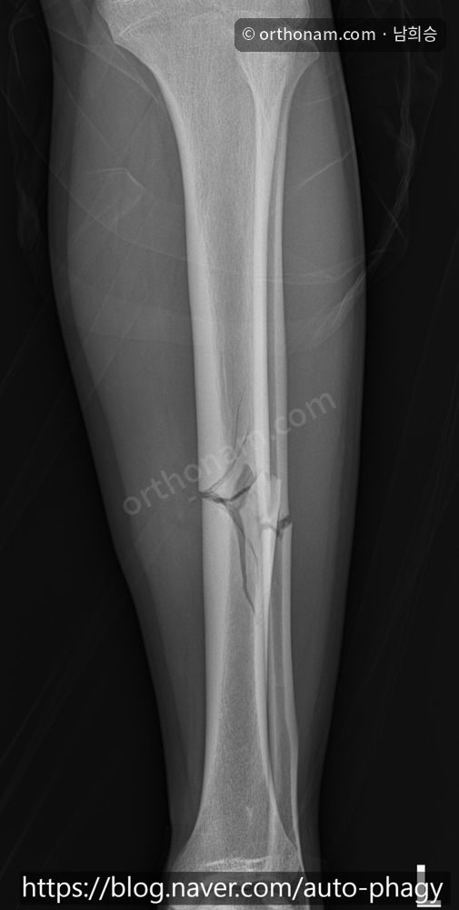
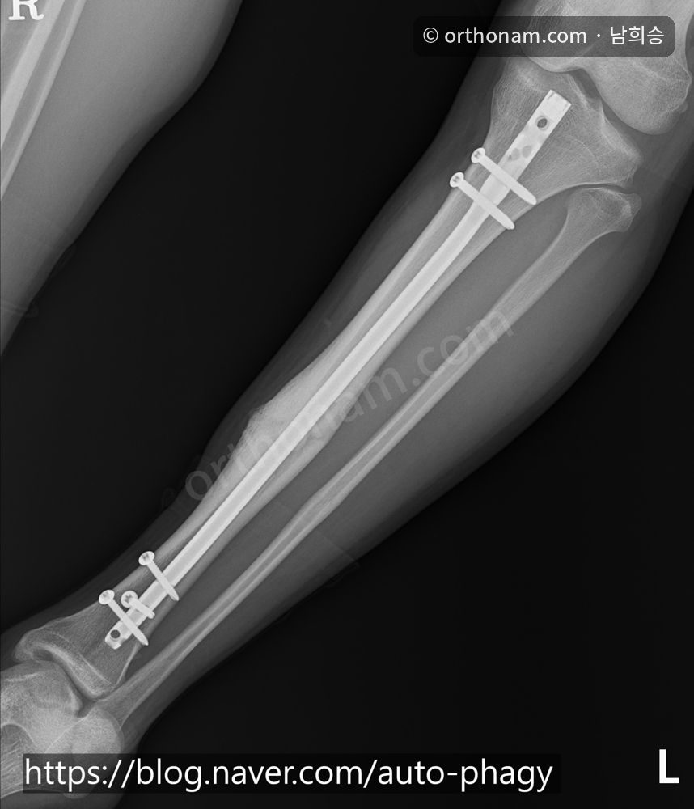
사례 3. 오토바이 사고를 당한 키 큰 성인 남성
오토바이 교통사고로 경골 간부 골절이 생긴 젊은 남성입니다. 이 환자는 키가 190cm가 넘어 다른 환자보다 경골 간부가 길다는 점이 특이했습니다.
골절 부위까지의 길이를 재어 보니 390mm였습니다. AO 기준으로 사용 가능한 경골 금속정의 최대 길이는 330mm이고, end cap을 끼워도 345mm입니다. 금속정이 좋은 선택이지만 기구의 한계가 있어 금속판 고정술을 시행했습니다.
최대한 정복(reduction)한 뒤 골절 부위 위아래로 나사를 이용해 고정했습니다. 400mm가 넘는 금속정이 있었다면 더 좋은 선택이었겠지만, 기구의 한계 때문에 금속판으로 치료한 사례입니다.
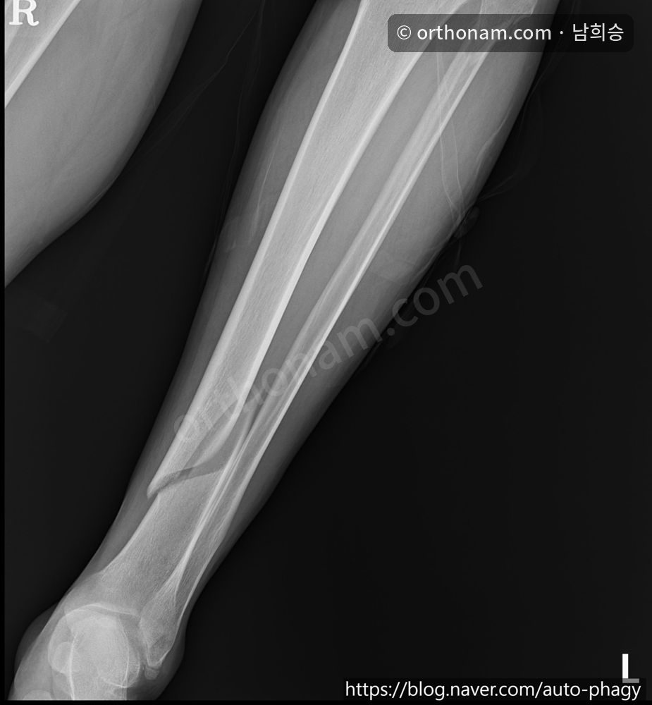
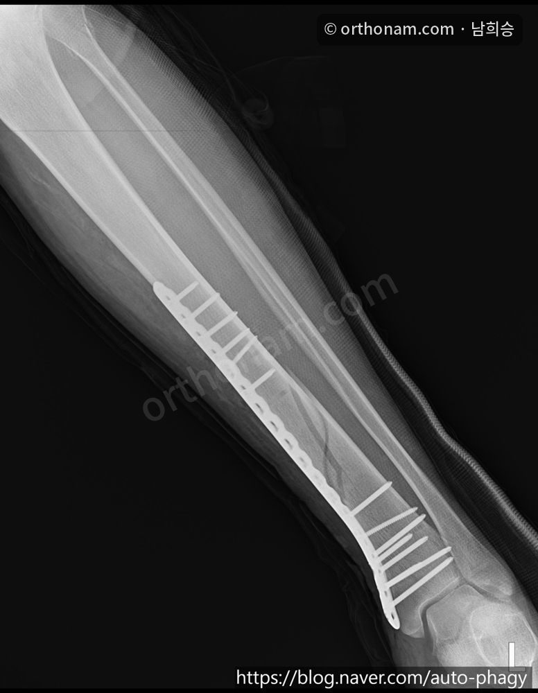
사례 4. 소아마비 후유증이 있는 환자의 경골 골절
소아마비가 있는 환자의 치료에는 논란이 있을 수 있습니다. 이 환자는 활동적으로 운동을 좋아하는 분이어서 수술을 진행했습니다.
소아마비로 다리의 슬개건(patella tendon) 발달이 좋지 않았고, 슬개건 아래 공간(infrapatellar space)이 작아 금속정 삽입점을 잡는 것이 매우 어려웠습니다. 수술 후 골절선이 약간 보이지만 정렬은 대체로 잘 맞추었고, 환자분은 수술 이후 좋아하는 운동을 자유롭게 하고 계십니다.
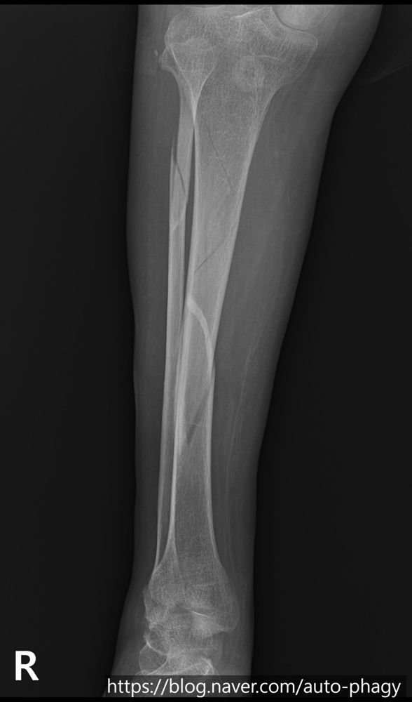
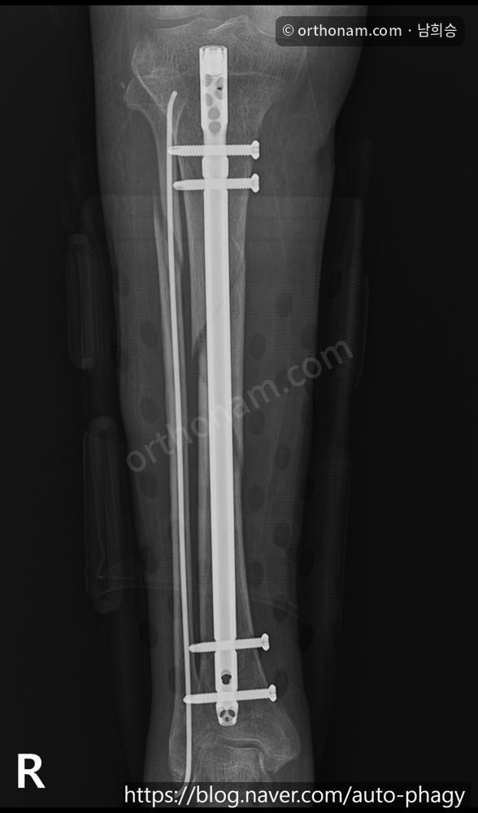
사례 5. 예전 골절 부위에 다시 부러진 경우
50대 여성 환자입니다. 젊었을 때 경골 간부 골절로 다른 병원에서 일리자로프 치료를 받았고, 그 뒤 비후성 유합(hypertrophic union)이 된 부위에서 다시 골절이 생긴 사례입니다.
이 환자는 치료가 매우 어렵습니다. 골수강 내 금속정은 가장 좁은 부위(isthmus)의 내경이 너무 작아 금속정이 통과하기 어렵고, 잘못하면 뼈가 갈라질 위험도 있습니다. 금속판은 뼈의 모양(contour)에 맞는 제품이 없어 수술방에서 직접 구부려 써야 하는데 이것도 쉽지 않습니다. 그래서 이 환자는 일리자로프 치료를 했던 병원으로 다시 의뢰해 그곳에서 치료받도록 했습니다.
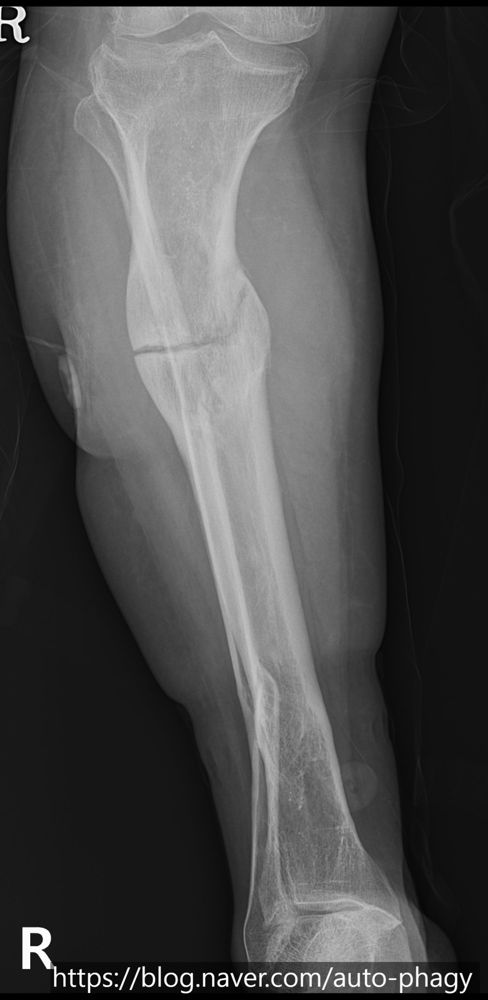
사례 6. 스케이트를 타다 넘어진 젊은 여성
경골 간부 중하부에서 큰 삼각형 모양의 골편이 떨어져 나온, 전형적인 불안정 골절이었고 비골 간부 골절도 함께 있었습니다. 이런 골절은 고에너지 외력으로 생기는 경우가 많아 정복뿐 아니라 연부조직 손상 정도와 구획증후군 가능성을 신중히 평가해야 합니다.
경골 골수강 내 금속정으로 치료했지만, 그대로 넣을 수는 없었습니다. 전위된 부위에 작은 절개창을 내어 정복한 뒤 금속정을 사용했습니다. 수술 중에 금속정을 넣었더니 내반(varus) 변형이 보여, 금속정을 빼고 정렬을 맞춘 다음 정렬을 다시 확인하고 금속정을 넣어 최종 정렬을 맞추었습니다. 수술 후 6주째에는 골절선이 거의 보이지 않았습니다.
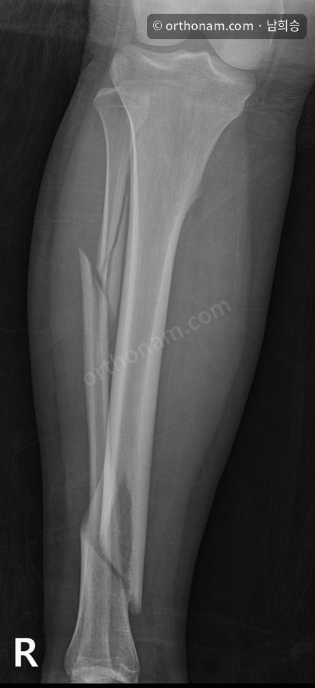
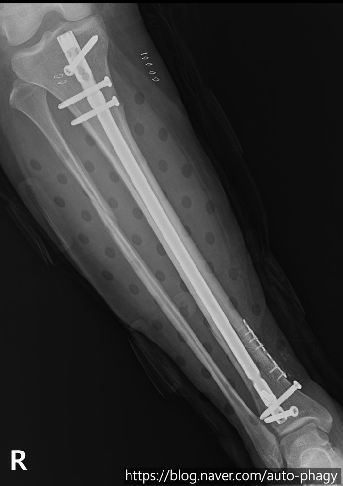
사례 7. 철근에 다리를 다친 40세 남성
이 환자의 가장 큰 특징은 경골 간부가 비골 간부에 끼어(impaction) 있다는 점이었습니다. MRI에서도 이 소견이 잘 보였고, 응급실에서 정복을 시도했지만 경골과 비골이 끼어 있어 잘 되지 않았습니다.
수술은 두 차례로 계획했습니다. 먼저 정복하고 비골 수술을 진행했고, 정복이 잘 되어 하지 정렬이 거의 맞았습니다. 10일 뒤 경골에 대한 2차 수술을 시행했습니다. 초기 경비골 골절이 심한 경우에는 하지 구획증후군을 예방하고 정복을 우선하기 위해 이렇게 순서를 나누어 수술합니다.
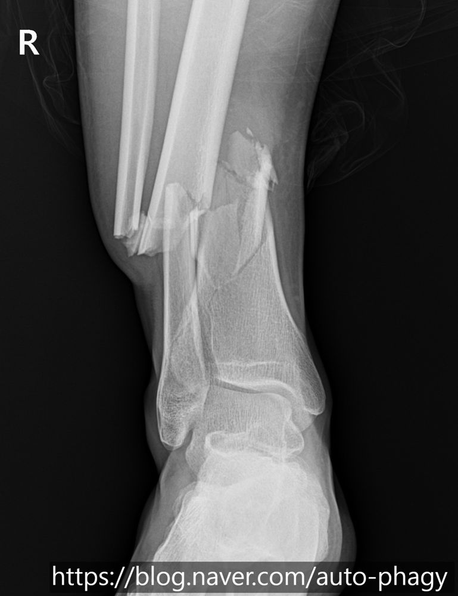
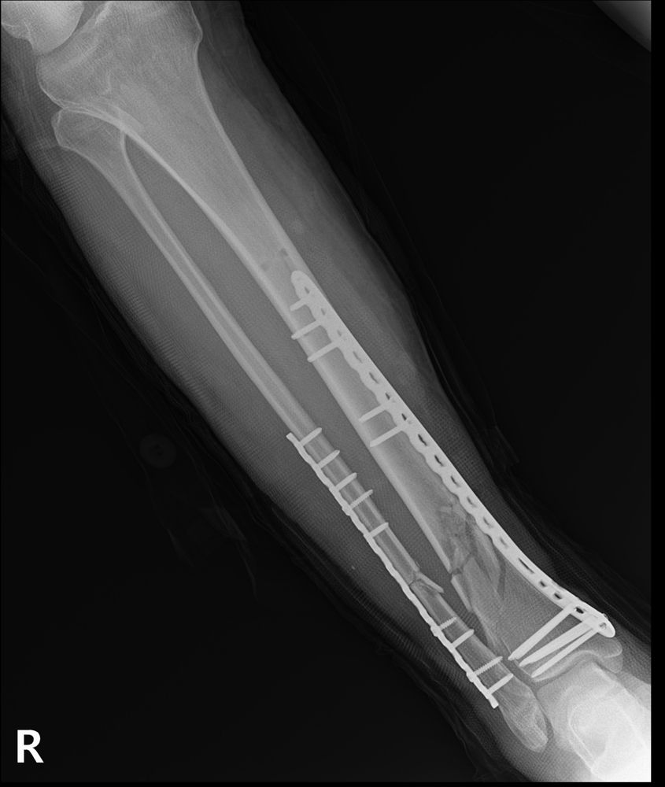
정리
7명의 사례를 살펴보았습니다. 같은 부위의 골절처럼 보여도 환자의 나이, 다친 원인(계단, 킥보드, 스케이트, 교통사고), 해부학적 특성(큰 키, 소아마비 등), 과거 수술력에 따라 치료 방법은 완전히 달라져야 합니다.
교과서에 나오는 가장 흔하고 좋은 치료법이 모든 환자에게 정답이 되지는 않습니다. 키가 매우 커서 현존하는 금속정의 길이가 모자라 금속판을 선택한 경우나, 과거 수술로 뼈가 변형되어 무리한 수술 대신 환자에게 가장 안전한 다른 대안을 찾은 경우가 이를 보여 줍니다.
골절 치료에서 의사의 역할은 부러진 뼈를 이어 붙이는 데서 끝나지 않습니다. 환자 각자의 상황과 기구의 한계까지 종합해 가장 적절한 방법을 설계하고, 올바른 정렬을 회복해 일상과 좋아하는 운동으로 돌아가도록 돕는 것이 핵심입니다.
경골 간부 골절은 대부분 고에너지 손상으로 발생합니다. 킥보드나 오토바이를 탈 때, 익숙하지 않은 운동(예: 스케이트)을 할 때는 안전에 유의해 주세요. 사고를 당했다면 지체 없이 전문의를 찾아 나에게 맞는 치료를 적절한 시기에 받으시길 바랍니다. 궁금한 점은 doctornhs@naver.com으로 보내 주세요.
이 글은 일반적인 정보입니다. 골절의 위치와 모양, 나이와 생활 방식에 따라 치료는 달라질 수 있으니 진료를 통해 확인하세요. 엑스레이를 누르면 큰 사진을 볼 수 있습니다.